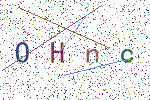

这周一写了一篇《2000字谏言，给那些想学Python的人，建议收藏后细看！》给大家讲了如何快速学习python。
其中就有说到我们为什么不要执迷于框架、模块的调用，而要自己先去造轮子。那今天就给大家造一个。
验证码是web开发中不可缺少的元素，而python又提供了非常多的验证码模块帮助大家快速生成各种验证码。
那你知道验证码生成的原理吗？所谓知其然，还要知其所以然。面试中，面试官不会因为你对框架很熟悉就夸赞你。
那今天小胖就带大家一层一层拨开验证码的衣服，看看其中的小奥秘 -<-
我们既然需要使用pillow库制作验证码，那么首先我们先来熟悉一下我们需要用到的方法。
'RGBA','RGB','L'等等模式red，green等，也可以是rgb的三个整数的元祖。也就是背景颜色from PIL import Image
captcha = Image.new('RGB', (1080, 900), (255,255,255))上面代码创建了一个亿RGB为颜色空间模式，尺寸为1080*900，背景颜色为白色的图片。
from PIL import Image
captcha = Image.new('RGB', (1080, 900), (255,255,255))
# captcha.save('captcha.png')
captcha.save('captcha', format='png')上面两种方式保存效果是一样的。
Image.show():显示图片，会调用电脑自带的显示图片的软件。
from PIL import ImageFont
# 字体文件路径 字体大小
font = ImageFont.truetype('simkai.ttf', 16)from PIL import Image, ImageDraw
captcha = Image.new('RGB', (1080, 900), 'red')
draw = ImageDraw.Draw(captcha)上面就创建了一个在captcha这张图片上的画笔，我们在这个图片上画任何东西都会使用这个画笔对象。
from PIL import Image, ImageDraw, ImageFont
captcha = Image.new('RGB', (1080, 900), 'red')
font = ImageFont.truetype('simkai.ttf', 16)
draw = ImageDraw.Draw(captcha)
# 字符绘制位置 绘制的字符 制定字体 字符颜色
draw.text((0,0), 'hello world', font=font, fill='black')from PIL import Image, ImageDraw, ImageFont
captcha = Image.new('RGB', (1080, 900), 'red')
draw = ImageDraw.Draw(captcha)
# 线条起点 线条终点
draw.line([(0,0),(1080,900)], fill='black')from PIL import Image, ImageDraw, ImageFont
captcha = Image.new('RGB', (1080, 900), 'red')
font = ImageFont.truetype('simkai.ttf', 16)
draw = ImageDraw.Draw(captcha)
# 点的位置 颜色
draw.point((500,500), fill='black')制作我们的验证码我们就会使用到上面的方法。当然，pillow肯定不止这些方法，这里我们就只列举这些了。
import string
class Captcha():
'''
captcha_size: 验证码图片尺寸
font_size: 字体大小
text_number: 验证码中字符个数
line_number: 线条个数
background_color: 验证码的背景颜色
sources: 取样字符集。验证码中的字符就是随机从这个里面选取的
save_format: 验证码保存格式
'''
def __init__(self, captcha_size=(150,100), font_size=30,text_number=4, line_number=4, background_color=(255, 255, 255), sources=None, save_format='png'):
self.text_number = text_number
self.line_number = line_number
self.captcha_size = captcha_size
self.background_color = background_color
self.font_size = font_size
self.format = save_format
if sources:
self.sources = sources
else:
self.sources = string.ascii_letters + string.digits这里说一下string模块。
import random
def get_text(self):
text = random.sample(self.sources,k=self.text_number)
return ''.join(text)random.sample()方法：从第一个参数中随机获取字符。获取个数有第二个参数指定。
def get_font_color(self):
font_color = (random.randint(0, 150), random.randint(0, 150), random.randint(0, 150))
return font_colordef get_line_color(self):
line_color = (random.randint(0, 250), random.randint(0, 255), random.randint(0, 250))
return line_colordef draw_text(self,draw, text, font, captcha_width, captcha_height, spacing=20):
'''
在图片上绘制传入的字符
:param draw: 画笔对象
:param text: 绘制的所有字符
:param font: 字体对象
:param captcha_width: 验证码的宽度
:param captcha_height: 验证码的高度
:param spacing: 每个字符的间隙
:return:
'''
# 得到这一窜字符的高度和宽度
text_width, text_height = font.getsize(text)
# 得到每个字体的大概宽度
every_value_width = int(text_width / 4)
# 这一窜字符的总长度
text_length = len(text)
# 每两个字符之间拥有间隙，获取总的间隙
total_spacing = (text_length-1) * spacing
if total_spacing + text_width >= captcha_width:
raise ValueError("字体加中间空隙超过图片宽度!")
# 获取第一个字符绘制位置
start_width = int( (captcha_width - text_width - total_spacing) / 2 )
start_height = int( (captcha_height - text_height) / 2 )
# 依次绘制每个字符
for value in text:
position = start_width, start_height
print(position)
# 绘制text
draw.text(position, value, font=font, fill=self.get_font_color())
# 改变下一个字符的开始绘制位置
start_width = start_width + every_value_width + spacingdef draw_line(self, draw, captcha_width, captcha_height):
'''
绘制线条
:param draw: 画笔对象
:param captcha_width: 验证码的宽度
:param captcha_height: 验证码的高度
:return:
'''
# 随机获取开始位置的坐标
begin = (random.randint(0,captcha_width/2), random.randint(0, captcha_height))
# 随机获取结束位置的坐标
end = (random.randint(captcha_width/2,captcha_width), random.randint(0, captcha_height))
draw.line([begin, end], fill=self.get_line_color())def draw_point(self, draw, point_chance, width, height):
'''
绘制小圆点
:param draw: 画笔对象
:param point_chance: 绘制小圆点的几率 概率为 point_chance/100
:param width: 验证码宽度
:param height: 验证码高度
:return:
'''
# 按照概率随机绘制小圆点
for w in range(width):
for h in range(height):
tmp = random.randint(0, 100)
if tmp < point_chance:
draw.point((w, h), fill=self.get_line_color())def make_captcha(self):
# 获取验证码的宽度， 高度
width, height = self.captcha_size
# 生成一张图片
captcha = Image.new('RGB',self.captcha_size,self.background_color)
# 获取字体对象
font = ImageFont.truetype('simkai.ttf',self.font_size)
# 获取画笔对象
draw = ImageDraw.Draw(captcha)
# 得到绘制的字符
text = self.get_text(
# 绘制字符
self.draw_text(draw, text, font, width, height)
# 绘制线条
for i in range(self.line_number):
self.draw_line(draw, width, height)
# 绘制小圆点 10是概率 10/100， 10%的概率
self.draw_point(draw,10,width,height)
# 保存图片
captcha.save('captcha',format=self.format)
# 显示图片
captcha.show()这样，我们就生成了我们的图片验证码了，效果图.

代码已全部上传至Github：https://github.com/MiracleYoung/You-are-Pythonista/tree/master/PythonExercise/App/captcha_project
关注公众号「Python专栏」，后台回复「机器学习电子书」获取100本免费机器学习相关的电子书哦～